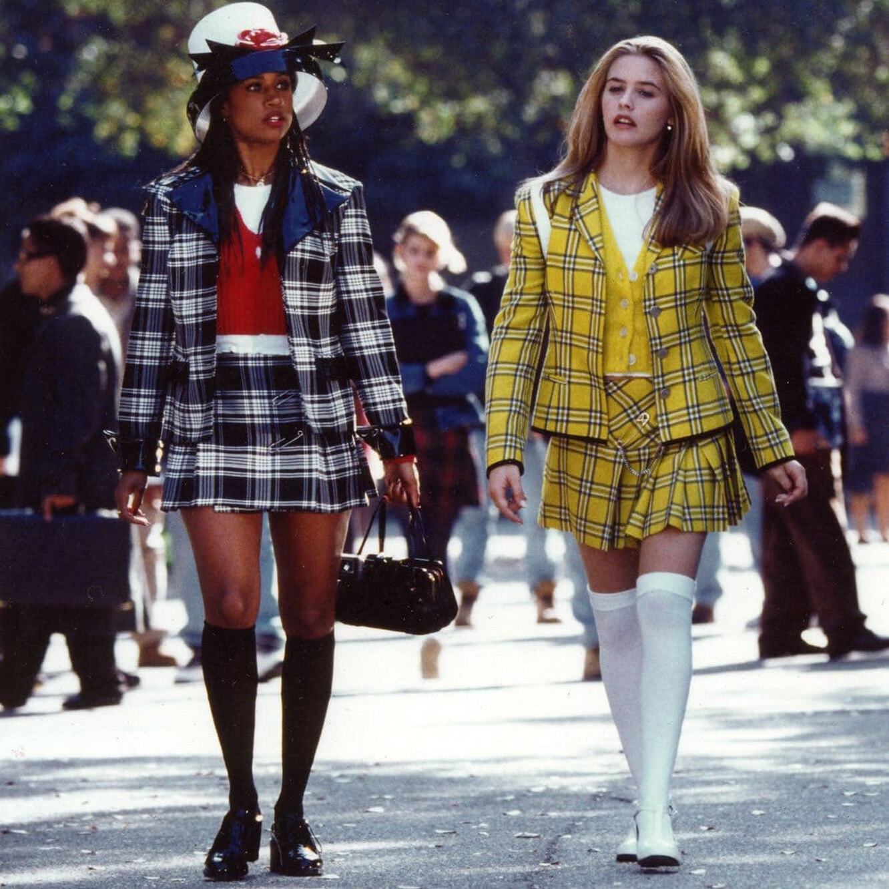

Начну с того, что у меня очень странные предпочтения при выборе фильмов. Иногда мне нравится то, что не нравится большинству моих друзей... Именно поэтому я хочу поделиться с вами своими любимыми фиьмами!
Когда я была совсем маленькой, мама мне включила Гарри Поттера. Это был Гарри Поттер и философский камень. Помню, что его я пересматривала практически каждый день. Именно с этого момента началась моя любовь к Гарри Поттеру. Я читала о нем книги, пересмотрела все фильмы, была подписана на многих актеров и группы в ВК о Гарри Поттере. Сейчас страсти утихли, я больше не слежу за всеми актерами, но до сих пор могу сказать, что фильмы о Гарри Поттере - мои самые любимые фильмы!
Ну а сейчас расскажу о тех самых странных фильмах, которые мне нравятся...
Очень люблю фильмы со странным сюжетом, тяжелой историей главного героя. Фильмы, где нужно подумать о том, как герой дошел до той жизни.
Еще одна моя любовь - американские олдскульные фильмы про подростков... Начиная с фильмов Дисней, которые я смотрела еще в начальной школе, и заканчивая "Американским пирогом"... Очень люблю. Очень.
